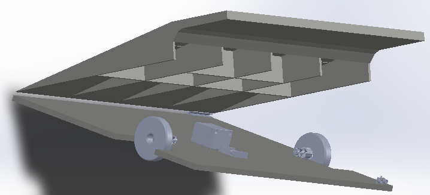

Our Journey So Far...
Research
Initially, we found stakeholders in the IWA and the NCBI. We began by finding our stakeholder's biggest problem with the rail system. Our stakeholder's problems ranged from lack of security to ramps being too steep for our stakeholder's to climb. Other problems included the ticket barrier's poor sensors and the reliability of the lifts at certain stops. But the problem that reoccured the most was that the rail service did not allow anyone who had mobility difficulties of any kind to travel without assistance. A major conclusion from most of our interviews and research was that this lack of independence has hindered the lives of many. We quickly realised that there is no reliable solution on the market for Irish Rail, as all of the current solutions would required major infrastructural changes. From this point we decided to find a solution that allowed rail users with accessibility issues to use the train independently.
Our Objectives
{kind=link}
Concept Design
From these objectives we came up with the AutoRamp. An easy to use autonomous ramp, that would be fixed on the platform in its docking station. When called on by the user via an app the AutoRamp positions itself between the train and the platform. It finds the door using machine vision and dead reckoning, constantly checking its surroundings for obstacles using machine vision and ultrasonic sensors. Having allowed the user onto the train the AutoRamp returns to its docking station using machine vision and its on board memory. Below is a clip of of concept design.
Design Iteration 1
We tested our hypothesis for the AutoRamp using a small autonomous buggy. We tested how the AutoRamp would navigate obstacles using ultrasonic sensors and how it would make decisions based on the environment around it. We used this design iteration to test software and techniques that the AutoRamp would use to navigate the platform autonoumously. Having successfully built an autonomous buggy that could successfully navigate a hazardous environment we moved onto Design Iteration 2. Below is a clip of how the buggy did just that.
Design Iteration 2
Design Iteration 2 is a full scale prototype that we have developed to test our navigation system. Using the software developed for the first design iteration, plus the addition of machine vision, larger motors, quadature encoders, larger motor controller and more ultrasonic sensors we have successfully designed a navigation system for the AutoRamp. The navigation system has been successful in navigating the AutoRamp to a target via machine vision. Below is a clip of the AutoRamp doing just that.
Successful Navigation Using Machine Vision
Using this prototype we are moving forward in perfecting the safety aspects of the AutoRamp. The AutoRamp must abide by various EU and Irish laws for accessibility ramps and autonomous bodies in public space. Along with this fact, this prototype is made from plywood and would not take the weight required by the current regulations (300Kg). Hence we must continue to model our next design iteration, which will comply with all relavent regulations, withstand the weight requied, navigate successfully to the train on a live platform and return successfully to its docking station.
Design and Modelling
{kind=link}
We have modelled our final design for the AutoRamp and structurally analysed this design for a load of 300Kg with a factor of safety of 3 to ensure that the ramp will not fail under load.

The structual analysis of the design concludes that a 6061 Aluminium body is the most suited material, due to its lightweight durability and strength. It also concludes that the design is sufficient and will function well.